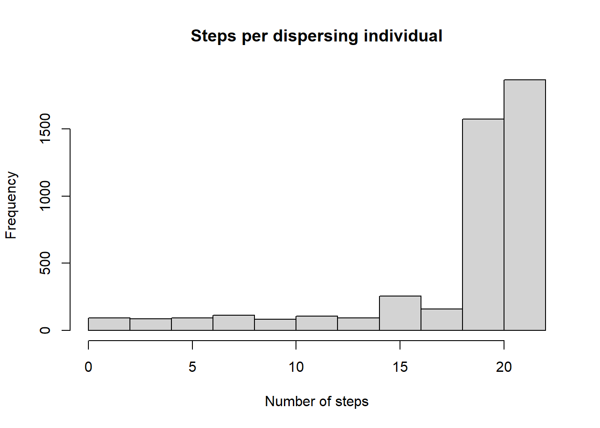
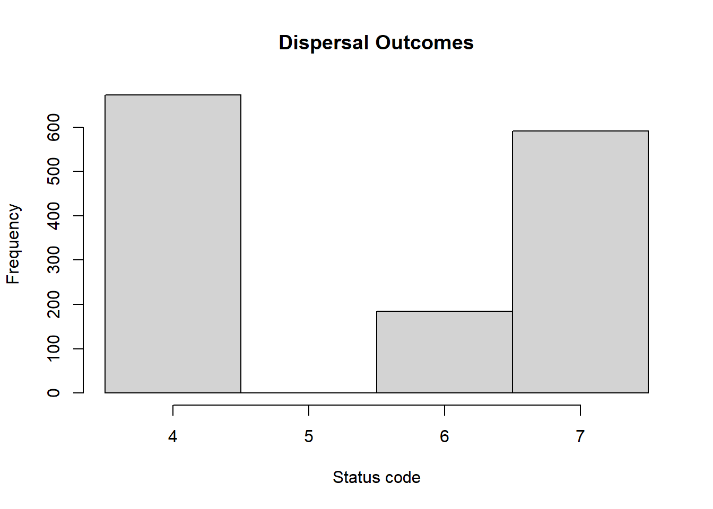

Tutorial 3: Evolution of dispersal during range shifting
In this tutorial, we will revisit the third example provided in Bocedi et al. (2014). We will use the same parameters as the original publication and the accompanying tutorial based on the Windows GUI.
With this example, we show how RangeshiftR can be used for theoretical applications exploring eco-evolutionary dynamics. Specifically, we model the evolution of dispersal strategies (emigration probability, dispersal distance or both) across the geographic range of a hypothetical species. The species’ range is assumed to be structured along a linear environmental gradient, which is shifted northwards for a period of time at a constant rate. This illustrates phenomena such as evolution of dispersal along stationary gradients (Dytham 2009), evolutionary rescue of the species’ range during environmental changes through evolution of dispersal (Henry, Bocedi, and Travis 2013), correlation between the evolution of two dispersal traits, and how the latter can influence the extent and pattern of the rescue process.
The simulations are run within artificial landscapes with a North-South gradient. The population is initialised in the southern part of the landscape and dispersal traits evolve under equilibrium conditions for 500 years. Then, the suitable habitat is shifting northwards with a fixed rate per year. In consequence, we should see a stronger selection towards increased dispersal. After another 300 years, the habitat remains constant again and the individuals can adapt to equilibrium conditions once again.
We will run three experiments:
- only emigration probability evolves,
- only dispersal distance evolves, and
- both traits evolve.
1 Getting started
1.1 Create a RS directory
First of all, load the package and set the relative path from your current working directory to the RS directory.
library(RangeshiftR)
library(raster)
library(RColorBrewer)
library(rasterVis)
library(latticeExtra)
library(viridis)
library(grid)
library(gridExtra)
# relative path from working directory:
dirpath = "Tutorial_03/"
dir.create(paste0(dirpath,"Inputs"), showWarnings = TRUE)
dir.create(paste0(dirpath,"Outputs"), showWarnings = TRUE)
dir.create(paste0(dirpath,"Output_Maps"), showWarnings = TRUE)This tutorial does not need any additional input files as the simulations are set within an artificial landscape.
2 Scenario a: evolution of emigration probability
2.1 Landscape parameters
We use the in-built landscape generator to create artificial random discrete landscapes of 50 columns (x) and 800 rows (y), with 30% of the cells being suitable habitat and the rest being unsuitable for the species. We set a (maximum) carrying capacity of 100 inds/ha and leave the resolution at its default of 100m. A new random landscape will be created for each replicate run.
carrycap <- c(0, 0, 0, 5, 0, 0)
land <- ArtificialLandscape(propSuit = 0.3,
K = 100,
dimX = 50,
dimY = 800,
continuous = FALSE)2.2 Simulation parameters
Next, we specify the simulation module, which not only defines the basic simulation and output parameters, but also holds the options to set an Environmental gradient. For this tutorial, we choose a shifting gradient in carrying capacity.
The required parameters are the gradient steepness defined as fraction of local carrying capacity K(x,y) per cell, the (initial) location of the optimum given as y-coordinate, the shifting rate defined as cells per year (in y-direction) as well as the start and end years of the gradient shift.
Overall, we simulate 20 replications for 1300 years each. As outputs we store information on the range, the individuals and the (mean) ‘traits by rows’ in 50-year intervals:
sim_0 <- Simulation(Simulation = 0,
Replicates = 20,
Years = 1300,
Gradient = 1, # in carrying capacity
GradSteep = 0.02,
Optimum = 100,
f = 0.0, # turn off local heterogeneity
Shifting = TRUE,
ShiftRate = 1,
ShiftStart = 500,
ShiftEnd = 800,
OutIntPop = 0,
OutIntInd = 50,
OutIntRange = 5,
OutIntTraitRow = 50)Note that we have to actively disable population output (OutIntPop = 0) since it is switched on by default.
2.3 Species parameters
Next, we set up our model species. We assume a simple asexual model:
demo <- Demography(Rmax = 4.0)In the dispersal module, we enable inter-individual variability in emigration probability. Therefore, we need to set the mean and standard deviation of the initial distribution of this trait, as well as the scaling factor for mutations.
We leave the default options for Settlement(), and in Transfer() we only set the kernel mean to 200m while keeping the defaults for the other options.
emig_a <- Emigration(IndVar = TRUE,
EmigProb = matrix(c(0.15, 0.05), ncol = 2),
MutationScales = 0.05)
disp_a <- Dispersal(Emigration = emig_a,
Transfer = DispersalKernel(Distances = 200),
Settlement = Settlement() )2.4 Genetic parameters
We use a simple genetics setup to make the emigration probability a heritable trait. It defines one chromosome with three loci that code for this trait as well as the mutation and crossover probability.
gene <- Genetics(Architecture = 0,
NLoci = 3,
ProbMutn = 0.001,
ProbCross = 0.3,
AlleleSD = 0.1,
MutationSD = 1.0)2.5 Initialisation parameters
We initialise the population in the southern part of the landscape up to y=200; all suitable cells within that range are initialised at their carrying capacity:
init <- Initialise(InitDens = 0,
maxY = 200)2.6 Run the simulation
Create the simulation parameter master from the single modules:
s <- RSsim(land = land, demog = demo, dispersal = disp_a, simul = sim_0, gene = gene, init = init)Before we run the simulation, let’s get an overview of the settings:
s## Simulation # 0
## -----------------
## Replicates = 20
## Years = 1300
## Absorbing = FALSE
## Shifting Environmental Gradient in K:
## G = 0.02, y_opt = 100
## f = 0
## ShiftRate = 1 rows per year; from year 500 to 800
## File Outputs:
## Range, every 5 years
## Individuals, every 50 years, starting year 0
## Traits/row, every 50 years, starting year 0
##
## Artificial landscape: random structure, binary habitat/matrix code
## Size : 50 x 800 cells
## Resolution : 100 meters
## Proportion of suitable habitat: 0.3
## Carrying capacity : 100
##
## Demography:
## Unstructured population:
## Rmax : 4
## bc : 1
## Reproduction Type : 0 (female only)
##
## Dispersal:
## Emigration:
## IndVar = TRUE
## Emigration probabilities:
## [,1] [,2]
## [1,] 0.15 0.05
## MutationScales = 0.05
##
## Transfer:
## Dispersal Kernel
## Dispersal kernel traits:
## [,1]
## [1,] 200
## Constant mortality prob = 0
##
## Settlement:
## Settlement conditions:
## [,1]
## [1,] 0
## FindMate = FALSE
##
## Genetics:
## Architecture = 0 : One chromosome per trait
## with 3 loci per chromosome.
## ProbMutn = 0.001
## ProbCross = 0.3
## AlleleSD = 0.1
## MutationSD = 1
##
##
## Initialisation:
## InitType = 0 : Free initialisation
## of all suitable cells/patches.
## InitDens = 0 : At carrying capacity K
## MaxY = 200If everything looks alright, we are ready to run the simulation (in the specified RS directory):
RunRS(s, dirpath)2.7 Plot results
To get a first impression of our simulation results, we look at the timeseries for total abundance and the number of occupied cells.
par(mfrow=c(1,2))
plotAbundance(s, dirpath, rep=F, sd=T)
plotOccupancy(s, dirpath,rep=F, sd=T)
We observe an initial stabilisation phase in the first 500 years, since we initialised all suitable cells at carrying capacity. During the shift in habitat / carrying capacity between years 500 and 800, we see a drastic decline in both abundance and occupancy, which recovers quickly after the shifting stopped.
In order to analyse the evolution of heritable traits - in this case the emigration probability - we need to process the individuals output. It contains information about the position and trait values (among other things) of all individuals at specified time intervals. Since this can amount to quite large amounts of data, a separate output file is generated for each replicate.
Like demonstrated in (Bocedi et al. 2014), we will create a time series of maps showing the mean trait value in each cell. For simplicity, we focus on a single replicate only, although it is straightforward to calculate the trait average over all replicates.
Let’s read the data file and turn it into a raster stack. The values of the emigration probability trait are listed in the column named EP:
Plot the maps:
levelplot(inds_stack,
col.regions=hcl.colors(20, palette = "viridis", rev = TRUE),
between = list(x=0),
names.attr = as.character(seq(0,1250,by = 50)),
scales=list(x=list(draw=F)),
par.strip.text=list(cex=.6)
)In equilibrium conditions, when the potential range is stationary, selection against dispersal prevails across the species’ range except near the margin, where the emigration probability evolves to be higher. When the environmental gradient starts to shift, the species lags behind its suitable environmental space mainly due the very low emigration probability that evolved throughout most of the range. At the same time, selection for increased dispersal occurs, especially at the leading edge. In consequence, emigration probability evolves to be higher, and the trait surfs back towards the centre and rear edge of the range. This ‘rescue’ effect enables the species to keep up with the shifting environment. After the shifting stops, high emigration is not advantageous anymore, and the trait gradually evolves back to values observed prior to environmental change.
We can also map the mean dispersal distances per cell, which can be extracted from the individuals output file under the column name DistMoved. It gives similar results:
To yield a summary of the trait evolution, we can simply use the aggregated information stored in the ‘mean traits by rows’ output file. It contains a time series of the heritable trait values, averaged over the x-coordinates. This can be useful to avoid the large storage amount for the individuals output.
# load 'traits by rows' output file
trait_ts <- read.table(paste0(dirpath,"Outputs/Batch1_Sim0_Land1_TraitsXrow.txt"), header = T)
# plot the time series for the replicate chosen above:
trait_ts_07 <- subset.data.frame(trait_ts, Rep==7)plot(NULL, type = "n", ylab = "Emigration Prob.", xlab = "y coordinate", xlim=c(0, 500), ylim=c(0,.2), main = "Trait time-series (Replicate 7)")
years <- c(500, 650, 800, 1200)
cols <- hcl.colors(length(years), palette = "Dark 3", alpha = 1, rev = FALSE)
leg.txt <- c()
for(i in 1:length(years)) {
trait_ts_07_yr <- subset.data.frame(trait_ts_07, Year==years[i])
polygon(c(trait_ts_07_yr$y,rev(trait_ts_07_yr$y)),
c((trait_ts_07_yr$meanEP+trait_ts_07_yr$stdEP), rev(pmax(0,trait_ts_07_yr$meanEP-trait_ts_07_yr$stdEP))),
border=NA, col='grey80')
lines(trait_ts_07_yr$y, trait_ts_07_yr$meanEP, type = "l", lwd = 1, col = cols[i])
leg.txt <- c(leg.txt, paste("Year", years[i]))
}
legend("topleft", leg.txt, col = cols, lwd = 1.5)
We see that the population moves towards norther latitudes (higher y) with increasing time. During range shifting (here, years 650 and 800), the emigration probabilities are generally higher than before (year 500) and after (year 1200) the shift. Moreoer, the variation in emigration probability is much lower during range shifting as selection for dispersal is high. In contrast, before and after the shift we observe large variation in emigration probability, with lower emigration in the range core and higher emigration towards the range margins.
3 Scenario b: evolution of dispersal distance
We now investigate the same eco-evolutionary process of range shifting, but this time we keep the emigration probability fixed and instead let the mean dispersal distance evolve.
3.1 Dispersal parameters
To achieve this, we can leave the demography and other modules as they are, but we have to define a new dispersal object. This time, we activate the inter-individual variation in the Transfer module, which is again a simple Dispersal kernel, and we set the mean and standard deviation for the mean dispersal distance. Also, we set the emigration probability to a constant and leave the default options for settlement.
trans_b <- DispersalKernel(IndVar = TRUE,
Distances = matrix(c(250, 50), ncol = 2),
MutationScales = 50)
disp_b <- Dispersal(Emigration = Emigration(EmigProb = 0.1),
Transfer = trans_b,
Settlement = Settlement() )In addition, we change the simulation index to 1 in the simulation parameter object, in order to avoid overwriting the previous output. (All other options stay the same. You can disable the individuals output with OutIntInd = 0 to speed up the computation, and in case you are only interested in the summary).
sim_1 <- Simulation(Simulation = 1,
Replicates = 20,
Years = 1300,
Gradient = 1,
GradSteep = 0.02,
Optimum = 100,
f = 0.0,
Shifting = TRUE,
ShiftRate = 1,
ShiftStart = 500,
ShiftEnd = 800,
OutIntPop = 0,
OutIntInd = 50,
OutIntRange = 5,
OutIntTraitRow = 50)Finally, the new modules are added to the old parameter master to define a new one, s_b.
s_b <- s + disp_b + sim_13.2 Run the simulation and plot summary
Run the new simulation:
RunRS(s_b, dirpath)Using similar plots as in scenario (a), we can see how dispersal distances evolve in a similar way as emigration probability, with generally higher mean dispersal distances evolving during range shifting, and higher dispersal distances towards the leading range edge.
In the output files, the heritable trait of dispersal distance is named distI. We plot the trait values averaged over x for the same time steps as we did for scenario (a):
# load 'traits by rows' output file
trait_ts <- read.table(paste0(dirpath,"Outputs/Batch1_Sim1_Land1_TraitsXrow.txt"), header = T)
# plot the time series for the replicate chosen above:
trait_ts_07 <- subset.data.frame(trait_ts, Rep==7)Plot the average trait values along latitude:
plot(NULL, type = "n", ylab = "Mean dispersal distance [m]", xlab = "y coordinate", xlim=c(0, 500), ylim=c(150,450), main = "Trait time-series (Replicate 7)")
years <- c(500, 650, 800, 1200)
cols <- hcl.colors(length(years), palette = "Dark 3", alpha = 1, rev = FALSE)
leg.txt <- c()
for(i in 1:length(years)) {
trait_ts_07_yr <- subset.data.frame(trait_ts_07, Year==years[i])
polygon(c(trait_ts_07_yr$y,rev(trait_ts_07_yr$y)),
c((trait_ts_07_yr$mean_distI+trait_ts_07_yr$std_distI), rev(pmax(0,trait_ts_07_yr$mean_distI-trait_ts_07_yr$std_distI))),
border=NA, col='grey80')
lines(trait_ts_07_yr$y, trait_ts_07_yr$mean_distI, type = "l", lwd = 1, col = cols[i])
leg.txt <- c(leg.txt, paste("Year", years[i]))
}
legend("bottomright", leg.txt, col = cols, lwd = 1.5)
Dispersal distances for the years 800 and 1200 are very similar and the lines largely overlap, indicating no substantial change in the trait values after range shifting. With a fixed emigration probability of 0.1, dispersal distances are not under such strong selection as emigration probability was, and more variability is maintained under a stationary range. This might explain why, when the environment starts to shift, the species does not decline as much as when only emigration probability evolves (see below, and Figure 4e in the paper). Moreover, after the shifting stops, the mean distances stay at the new level for a long time and do not evolve back towards lower values over the course of the simulation.
4 Scenario c: simultaneous evolution of emigration probability and dispersal distance
Lastly, we want to model the simultaneous evolution of emigration probabilities and dispersal distances, as dispersal strategies in reality are likely to be determined by a suite of traits that come under selection. However, limited theoretical work has been done to look at the evolution of such ‘dispersal syndromes’ (Travis et al. 2012).
4.1 Dispersal parameters
Again, we create a new dispersal module. We can re-use the emigration and transfer modules from scenarios (a) and (b):
disp_c <- Dispersal(Emigration = emig_a,
Transfer = trans_b,
Settlement = Settlement() )The new simulation module:
sim_2 <- Simulation(Simulation = 2,
Replicates = 20,
Years = 1300,
Gradient = 1,
GradSteep = 0.02,
Optimum = 100,
f = 0.0,
Shifting = TRUE,
ShiftRate = 1,
ShiftStart = 500,
ShiftEnd = 800,
OutIntPop = 0,
OutIntInd = 50,
OutIntRange = 5,
OutIntTraitRow = 50)The new parameter master s_c:
s_c <- s + disp_c + sim_24.2 Compare population dynamics
RunRS(s_c, dirpath)Let’s compare the time series for total abundance and the proportion of occupied habitat for all three scenarios (Fig. 4b in Bocedi et al. (2014)):
cols <- hcl.colors(3, palette = "Dark 2", alpha = 1, rev = FALSE)
par(mfrow=c(1,2))
rep_means_a <- aggregate(NInds~Year, data = readRange(s , dirpath), FUN = "mean")
rep_means_b <- aggregate(NInds~Year, data = readRange(s_b, dirpath), FUN = "mean")
rep_means_c <- aggregate(NInds~Year, data = readRange(s_c, dirpath), FUN = "mean")
plot(NInds~Year, data=rep_means_a, type = "l", lwd = 2, col = cols[1], ylab = "Total abundance", xlab = "Year")
lines(NInds~Year, data=rep_means_b, type = "l", lwd = 2, col = cols[2])
lines(NInds~Year, data=rep_means_c, type = "l", lwd = 2, col = cols[3])
leg.txt <- c("Scenario a","Scenario b","Scenario c")
legend("topright", leg.txt, col = cols, lwd = 1.5, bty='n')
rep_means_a <- aggregate(Occup.Suit~Year, data = readRange(s , dirpath), FUN = "mean")
rep_means_b <- aggregate(Occup.Suit~Year, data = readRange(s_b, dirpath), FUN = "mean")
rep_means_c <- aggregate(Occup.Suit~Year, data = readRange(s_c, dirpath), FUN = "mean")
plot(Occup.Suit~Year, data=rep_means_a, type = "l", lwd = 2, col = cols[1], ylab = "Proportion of occupied habitat", xlab = "Year")
lines(Occup.Suit~Year, data=rep_means_b, type = "l", lwd = 2, col = cols[2])
lines(Occup.Suit~Year, data=rep_means_c, type = "l", lwd = 2, col = cols[3])
Notably, the three different scenarios resulted in large differences in total population abundance and occupancy, changing the range dynamics during the shifting phase. The largest decrease in population size during range shifting was observed in scenario (a). In fact, when both traits evolved in scenario (c), the rescue of the species was much quicker than when only one trait evolved. Clearly, more work is needed to understand the role of simultaneous trait evolution in driving spatial population dynamics, for example in response to climate change.
4.3 Compare trait values
The individuals output and the mean traits output files will now report values for both traits, named EP and distI.
# load 'traits by rows' output file
trait_ts <- read.table(paste0(dirpath,"Outputs/Batch1_Sim2_Land1_TraitsXrow.txt"), header = T)
# plot the time series for the replicate chosen above:
trait_ts_07 <- subset.data.frame(trait_ts, Rep==7)Plot the average trait values along latitude:
par(mar=c(5, 4, 4, 5) + 0.1)
plot(NULL, type = "n", ylab = "Emigration Prob.", xlab = "y coordinate", xlim=c(50, 600), ylim=c(0,.45), main = "Trait time-series (Replicate 7)")
years <- c(500, 650, 800, 1200)
cols <- hcl.colors(length(years), palette = "Dark 3", alpha = 1, rev = FALSE)
leg.txt <- c()
for(i in 1:length(years)) {
trait_ts_07_yr <- subset.data.frame(trait_ts_07, Year==years[i])
polygon(c(trait_ts_07_yr$y,rev(trait_ts_07_yr$y)),
c((trait_ts_07_yr$meanEP+trait_ts_07_yr$stdEP), rev(pmax(0,trait_ts_07_yr$meanEP-trait_ts_07_yr$stdEP))),
border=NA, col='grey80')
lines(trait_ts_07_yr$y, trait_ts_07_yr$meanEP, type = "l", lwd = 1, col = cols[i])
leg.txt <- c(leg.txt, paste("Year", years[i]))
}
par(new = T)
plot(NULL, type = "n", xlab="", ylab="", xlim=c(0, 600), ylim=c(0,450), axes = F)
for(i in 1:length(years)) {
trait_ts_07_yr <- subset.data.frame(trait_ts_07, Year==years[i])
polygon(c(trait_ts_07_yr$y,rev(trait_ts_07_yr$y)),
c((trait_ts_07_yr$mean_distI+trait_ts_07_yr$std_distI), rev(pmax(0,trait_ts_07_yr$mean_distI-trait_ts_07_yr$std_distI))),
border=NA, col='grey90', axes=F)
lines(trait_ts_07_yr$y, trait_ts_07_yr$mean_distI, type = "l", lwd = 1, lty = 3, col = cols[i])
}
axis(side = 4, ylim=c(0,700))
mtext("Mean dispersal distance", side = 4, line = 3)
legend("topright", leg.txt, col = cols, lwd = 1.5)
In this plot, the solid lines (bottom graphs) show the emigration probability and the dashed lines (top graphs) show the mean dispersal distances. For the years 800 and 1200, the latter ones largely overlap. The distribution of trait values across latitude and over time is very similar to the previous two scenarios. Notably, when the two traits evolve simultaneously, the maximum dispersal distances evolving during range shifting remain slightly lower than in scenario (b) when emigration probability was fixed (cf. Bocedi et al. 2014).
You may also have noted that emigration probability and dispersal distances tend to be negatively correlated, which is more pronounced during the range shifting period. However, there is high variability between simulations, and some runs can even show positive correlations. This indicates that also processes other than evolution by mutation and selection play a role, including stochastic founder effects at the leading edge and surfing of genotypes backwards from the front. For this reason, the graphs depicted in Figure 4a-d of Bocedi et al. (2014) were computed from a single replicate run. More work is needed to tease apart these different processes and understand their relative roles under environmental changes.
References
Bocedi, G., S.C.F. Palmer, G. Pe’er, R.K. Heikkinen, Y.G. Matsinos, K. Watts, and J.M.J. Travis. 2014. “RangeShifter: A Platform for Modelling Spatial Eco-Evolutionary Dynamics and Species’ Responses to Environmental Changes.” Methods in Ecology and Evolution 5 (4): 388–96. https://doi.org/10.1111/2041-210X.12162.
Dytham, Calvin. 2009. “Evolved Dispersal Strategies at Range Margins.” Proceedings of the Royal Society B 276 (1661): 1407–13. https://doi.org/10.1098/rspb.2008.1535.
Henry, Roslyn C., Greta Bocedi, and Justin M.J. Travis. 2013. “Eco-Evolutionary Dynamics of Range Shifts: Elastic Margins and Critical Thresholds.” Journal of Theoretical Biology 321: 1–7. https://doi.org/10.1016/j.jtbi.2012.12.004.